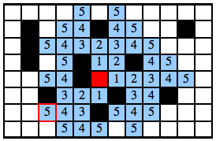

Coloriez en bleu les cases que Castor peut atteindre en 5 pas ou moins à partir de sa maison, représentée par une croix.
En un pas, Castor se déplace d'une case au-dessus, au-dessous, à droite ou à gauche (mais pas en diagonale). Il ne va pas sur les cases noires.
Pour colorier des cases, cliquez sur l'un des nombres à droite de la grille, puis cliquez sur toutes les cases que vous voulez colorier et marquer de ce nombre. En cas d'erreur, vous pouvez recliquer sur une case pour la vider.
Les nombres au milieu des cases coloriées n'ont pas d'importance pour la réponse, mais peuvent vous aider à vous organiser.
Chaque case coloriée en trop ou en moins dans votre réponse finale coûte 1 point.
| 1 | 2 | 3 | 4 | 5 |
L'image ci-dessous montre le nombre de pas nécessaires pour arriver à chaque case que l'on peut atteindre en 5 pas ou moins.
Ce sujet présente un problème de calcul de plus courts chemins, c'est-à-dire qu'on cherche à mesurer le nombre minimum de pas qu'il faut à Castor pour atteindre certaines cases à partir de sa maison.
Pour résoudre ce sujet, on peut appliquer l'algorithme de parcours en largeur, qui consiste à noter d'abord toutes les cases que l'on peut atteindre en 1 pas, puis toutes les cases que l'ont peut atteindre en 2 pas, puis toutes les cases accessibles en 3 pas, etc...